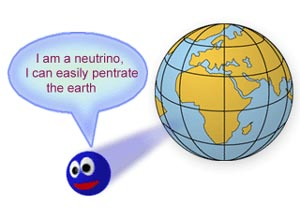
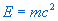

|

|
Fig. 1 A neutrino can easily penetrate the earth.
|
According to Einstein's theory of relativity, the energy of an object equals the
sum of its kinetic energy and its rest mass energy. Rest mass energy is the
energy that corresponds to the mass of the object when it is at rest. This
is a basic property inherent in matter. Its value is ,
where
m is the rest mass of the object and
c is the speed of
light in vacuum. This is the famous Einstein's mass-energy equivalence relation,
which is the theoretical foundation of nuclear applications. Among all of
the known elementary particles, most of them have different values of rest
mass. Particles with zero rest mass are rare. The well-known photon is one
of them. For a long period, physical theories supposed that neutrino had zero
rest mass. However, the Super-Kamiokande detector (a neutrino observatory)
in Japan recently discovered that neutrino has nonzero rest mass. This discovery
immediately became a hot topic in the field of physics and also in astronomy.
Why does the rest mass of neutrino have so great influence in physics and
astronomy?
What is neutrino?
In 1930, W. Pauli postulated the existence of neutrino, aiming at explaining the
continuous property of the kinetic energy spectrum of the beta particles during
the beta decay. He believed that apart from the electron released in beta
decay, an electrically neutral particle should also have been released. In
1934, E. Fermi established the beta decay theory and named this particle the
neutrino. Particle physicists nowadays believe that there are three different
kinds of neutrino in nature. They are related to the three members of the
lepton family respectively. They are electron-neutrino ,
neutrino
and neutrino .
In other words, there are three different states (or flavours) of neutrino.
Same as other particles, there exist antiparticles of the neutrinos, named
as the antineutrinos. According to the standard model in particle physics,
neutrino has zero rest mass and is a spin-half particle. Neutrino only involves
in weak interactions. Its presence in a particle reaction has become an indicator
of the existence of weak interaction. Theoretically, the existence of neutrino
is confirmed, but its interaction with ordinary matter is very weak and it
can pass through the earth almost without any obstacles. This makes the detection
of it very difficult. As its existence and the value of its rest mass mean
a lot to cosmology and physics, it is highly valued by scientists. It has
also been considered as an important problem to be solved in physics in the
late twentieth century.
The physical meaning of the rest mass of neutrino
In the late 60's, physicists successfully unified the electromagnetic interaction
and the weak interaction into the Electroweak Theory and received the Nobel
Prize in physics afterward. The theory had predicted the mass of neutrino
to be zero. Later, physicists tried to unify all the four fundamental interactions
in nature and proposed the Grand Unified Theory. This theory predicted the
proton decay and that neutrino has a nonzero rest mass. As the half-life of
proton decay lasts 1031 years and the interaction between neutrino and other
particles is very weak, it is very difficult to verify these two predictions.
At present, people have yet found a strong evidence for proton decay. However,
there is no doubt the discovery of the rest mass of neutrino is a milestone
for the establishment of the Grand Unified Theory. Because the present standard
model of particle physics is extremely rigorous and most of its predictions
are already verified by experiments, the confirmation of the rest mass of
neutrino has forced the physicists to modify the old standard model in particle
physics. We have reasons to believe that the present standard model is only
a better approximation of a more rigorous theory. In the near future, many
new particles may be discovered, new ideas in physics and new theories will
appear.
The cosmological meaning of the rest mass of neutrino
The generally accepted cosmological model today is the big bang model. This theory
considers that the universe was born in one big bang and it keeps expanding
since then. However, one prediction of the Big Bang Theory has a great deviation
from real astronomical observations. From the astronomical observations, scientists
have found out that the abundance of cosmic matter is far less than the predicted
value of the Big Bang Theory. If the Big Bang Theory is correct, this indicates
that there is still a large amount of undiscovered dark matters existing in
the universe. These dark matters must be very stable or with very long life
spans. Also, they do not involve in electromagnetic interactions. Therefore
it is impossible for them to send out electromagnetic signals to indicate
their existence. From all the elementary particles known, neutrino is the
only possible candidate for dark matter. Latest researches have shown that
as long as the total mass of the three kinds of neutrino reaches tens of electron-volts,
the recent astronomical observations can be theoretically explained very well.
The disappearance of solar neutrino and neutrino oscillation
During the nuclear reactions in the inner sun, there is a large amount of neutrinos
produced at every moment. But for many years, the result of the solar neutrino
observation has pointed out that the flux of neutrino from solar nuclear reactions
has only reached 1/3 to 1/2 of the theoretical prediction. This is called
the solar-neutrino problem. To explain this phenomenon, physicists have deduced
that if the rest mass of neutrino is nonzero, according to quantum mechanics,
during the transmission of neutrino from the sun to the earth, neutrino would
interchange among its three flavours. This is called the neutrino oscillation.
As the old observational instruments can only detect the electron-neutrino,
the disappearance problem above arises. The nonzero rest mass of neutrino
has given a clear answer to this problem.
An unfinished story
Although the fact that neutrino has nonzero rest mass has already been proved
experimentally, there are still a lot of problems remained. For example, for
the time being, only the mass difference between electron-neutrino and muon-neutrino
is given. The absolute mass of neutrino is still unconfirmed. Also, the third
kind of neutrino, the tau-neutrino, has not been discovered yet. Are there
still other flavours of neutrino existing in nature? What is the mass of each
kind of neutrino? Experiments cannot give a clear answer yet. The fact that
neutrino has nonzero rest mass has solved many fundamental problems in contemporary
physics and cosmology and at the same time puts forth a great challenge to
particle physics. We can foresee that the picture of the formation and the
evolution of the universe will alter a lot in the future. Since the rest mass
of neutrino has not been determined, we still cannot know all about the history
and the fate of the universe.